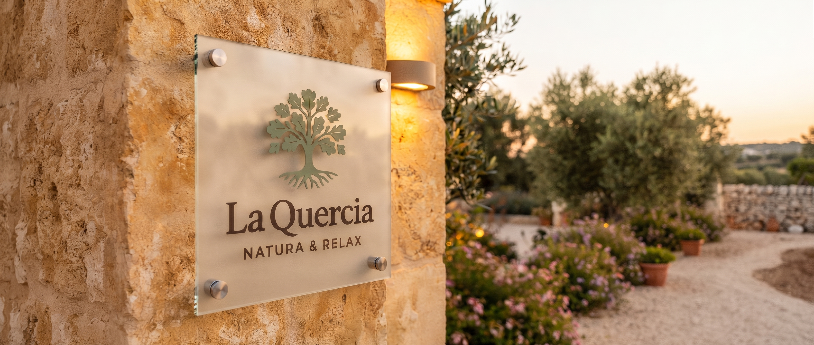
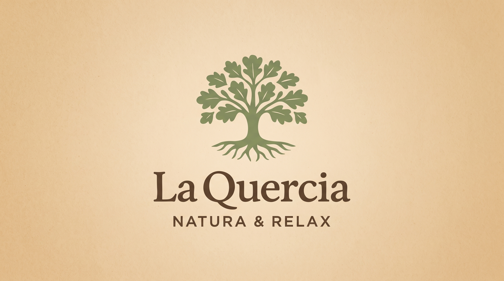
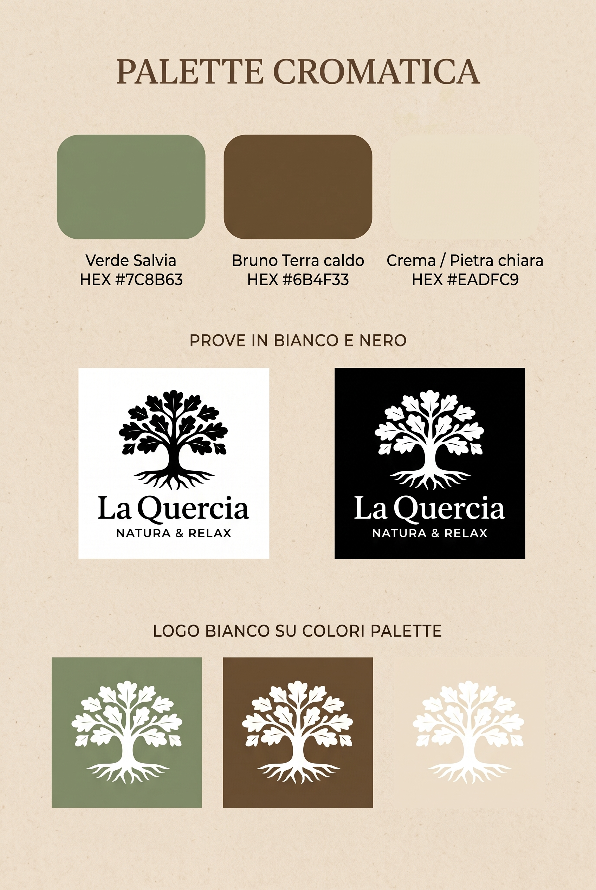
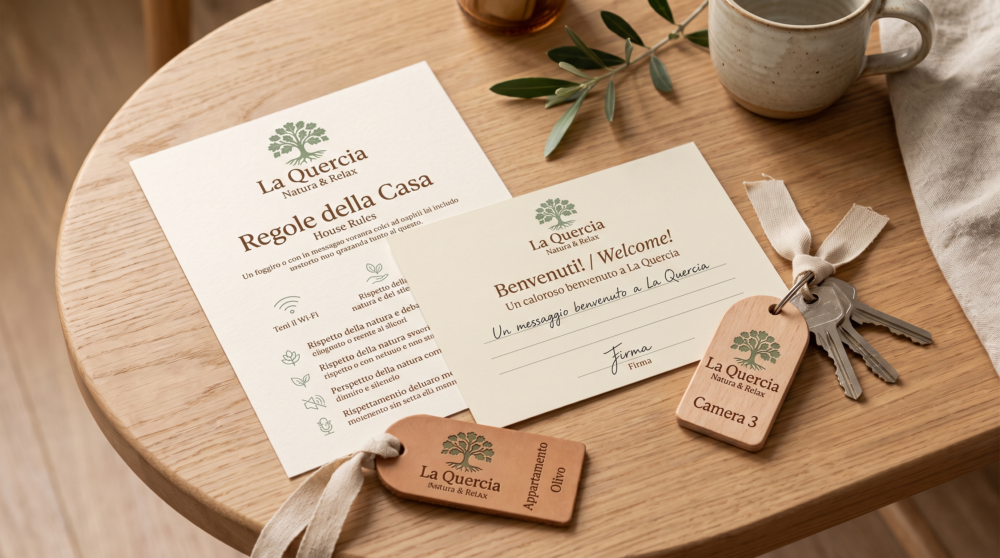
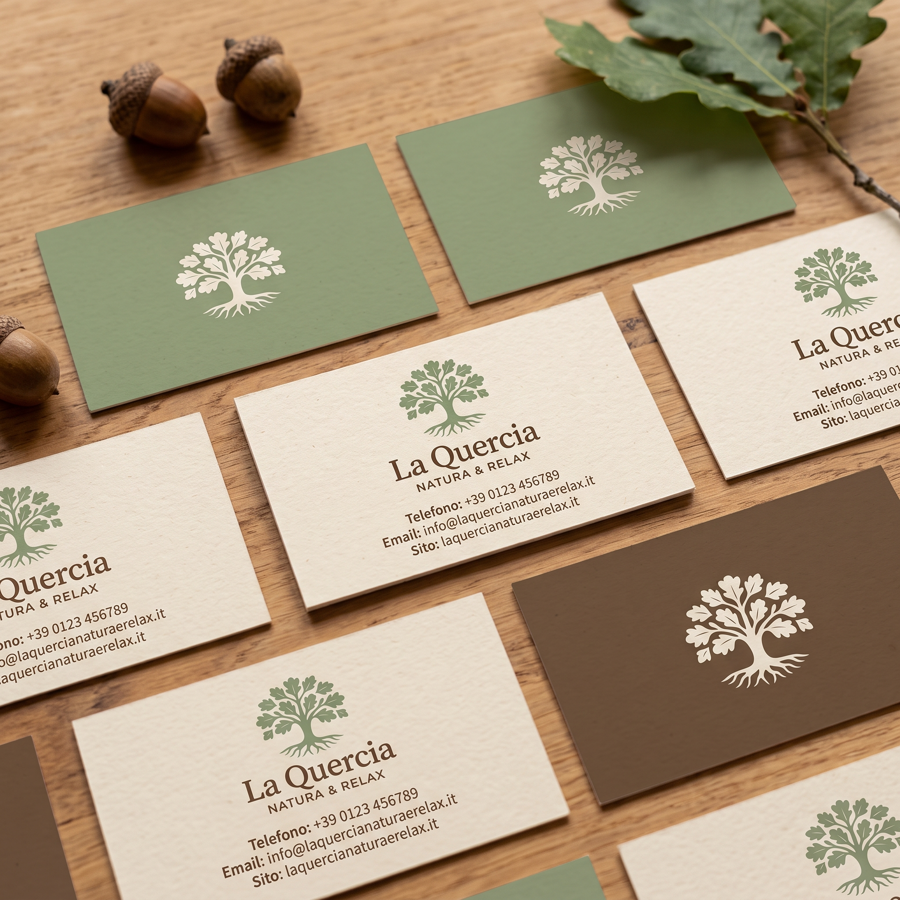
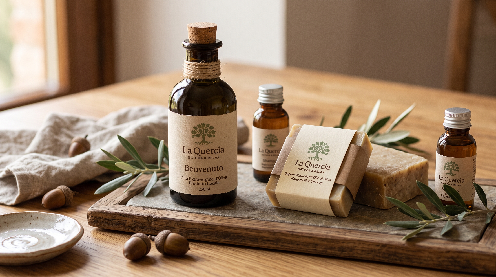

LA QUERCIA NATURA & RELAX
Un'identità visiva accogliente, autentica e radicata nel territorio per una villa vacanze immersa nella quiete rurale di Polignano a Mare. Il disegno botanico della quercia secolare con le sue radici a vista simboleggia l'ospitalità genuina pugliese, combinando tonalità naturali verde salvia e terra d'ombra con una tipografia serif elegante e rilassante.



«Il silenzio della terra, l'ombra degli ulivi e la quiete della macchia mediterranea: un rifugio intimo dove ritrovare il proprio tempo.»


